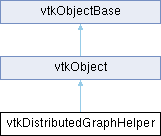

|
Etrek
|
|
Etrek
|
helper for the vtkGraph class that allows the graph to be distributed across multiple memory spaces. More...
#include <vtkDistributedGraphHelper.h>

Public Member Functions | |
| vtkTypeMacro (vtkDistributedGraphHelper, vtkObject) | |
| void | PrintSelf (ostream &os, vtkIndent indent) override |
| vtkIdType | GetVertexOwner (vtkIdType v) const |
| vtkIdType | GetVertexIndex (vtkIdType v) const |
| vtkIdType | GetEdgeOwner (vtkIdType e_id) const |
| vtkIdType | GetEdgeIndex (vtkIdType e_id) const |
| vtkIdType | MakeDistributedId (int owner, vtkIdType local) |
| void | SetVertexPedigreeIdDistribution (vtkVertexPedigreeIdDistribution Func, void *userData) |
| vtkIdType | GetVertexOwnerByPedigreeId (const vtkVariant &pedigreeId) |
| virtual void | Synchronize ()=0 |
| virtual vtkDistributedGraphHelper * | Clone ()=0 |
| Public Member Functions inherited from vtkObject | |
| vtkBaseTypeMacro (vtkObject, vtkObjectBase) | |
| virtual void | DebugOn () |
| virtual void | DebugOff () |
| bool | GetDebug () |
| void | SetDebug (bool debugFlag) |
| virtual void | Modified () |
| virtual vtkMTimeType | GetMTime () |
| void | PrintSelf (ostream &os, vtkIndent indent) override |
| void | RemoveObserver (unsigned long tag) |
| void | RemoveObservers (unsigned long event) |
| void | RemoveObservers (const char *event) |
| void | RemoveAllObservers () |
| vtkTypeBool | HasObserver (unsigned long event) |
| vtkTypeBool | HasObserver (const char *event) |
| vtkTypeBool | InvokeEvent (unsigned long event) |
| vtkTypeBool | InvokeEvent (const char *event) |
| std::string | GetObjectDescription () const override |
| unsigned long | AddObserver (unsigned long event, vtkCommand *, float priority=0.0f) |
| unsigned long | AddObserver (const char *event, vtkCommand *, float priority=0.0f) |
| vtkCommand * | GetCommand (unsigned long tag) |
| void | RemoveObserver (vtkCommand *) |
| void | RemoveObservers (unsigned long event, vtkCommand *) |
| void | RemoveObservers (const char *event, vtkCommand *) |
| vtkTypeBool | HasObserver (unsigned long event, vtkCommand *) |
| vtkTypeBool | HasObserver (const char *event, vtkCommand *) |
| template<class U, class T> | |
| unsigned long | AddObserver (unsigned long event, U observer, void(T::*callback)(), float priority=0.0f) |
| template<class U, class T> | |
| unsigned long | AddObserver (unsigned long event, U observer, void(T::*callback)(vtkObject *, unsigned long, void *), float priority=0.0f) |
| template<class U, class T> | |
| unsigned long | AddObserver (unsigned long event, U observer, bool(T::*callback)(vtkObject *, unsigned long, void *), float priority=0.0f) |
| vtkTypeBool | InvokeEvent (unsigned long event, void *callData) |
| vtkTypeBool | InvokeEvent (const char *event, void *callData) |
| virtual void | SetObjectName (const std::string &objectName) |
| virtual std::string | GetObjectName () const |
| Public Member Functions inherited from vtkObjectBase | |
| const char * | GetClassName () const |
| virtual vtkTypeBool | IsA (const char *name) |
| virtual vtkIdType | GetNumberOfGenerationsFromBase (const char *name) |
| virtual void | Delete () |
| virtual void | FastDelete () |
| void | InitializeObjectBase () |
| void | Print (ostream &os) |
| void | Register (vtkObjectBase *o) |
| virtual void | UnRegister (vtkObjectBase *o) |
| int | GetReferenceCount () |
| void | SetReferenceCount (int) |
| bool | GetIsInMemkind () const |
| virtual void | PrintHeader (ostream &os, vtkIndent indent) |
| virtual void | PrintTrailer (ostream &os, vtkIndent indent) |
| virtual bool | UsesGarbageCollector () const |
Static Public Member Functions | |
| static vtkInformationIntegerKey * | DISTRIBUTEDVERTEXIDS () |
| static vtkInformationIntegerKey * | DISTRIBUTEDEDGEIDS () |
| Static Public Member Functions inherited from vtkObject | |
| static vtkObject * | New () |
| static void | BreakOnError () |
| static void | SetGlobalWarningDisplay (vtkTypeBool val) |
| static void | GlobalWarningDisplayOn () |
| static void | GlobalWarningDisplayOff () |
| static vtkTypeBool | GetGlobalWarningDisplay () |
| Static Public Member Functions inherited from vtkObjectBase | |
| static vtkTypeBool | IsTypeOf (const char *name) |
| static vtkIdType | GetNumberOfGenerationsFromBaseType (const char *name) |
| static vtkObjectBase * | New () |
| static void | SetMemkindDirectory (const char *directoryname) |
| static bool | GetUsingMemkind () |
Protected Member Functions | |
| virtual void | AddVertexInternal (vtkVariantArray *propertyArr, vtkIdType *vertex)=0 |
| virtual void | AddVertexInternal (const vtkVariant &pedigreeId, vtkIdType *vertex)=0 |
| virtual void | AddEdgeInternal (vtkIdType u, vtkIdType v, bool directed, vtkVariantArray *propertyArr, vtkEdgeType *edge)=0 |
| virtual void | AddEdgeInternal (const vtkVariant &uPedigreeId, vtkIdType v, bool directed, vtkVariantArray *propertyArr, vtkEdgeType *edge)=0 |
| virtual void | AddEdgeInternal (vtkIdType u, const vtkVariant &vPedigreeId, bool directed, vtkVariantArray *propertyArr, vtkEdgeType *edge)=0 |
| virtual void | AddEdgeInternal (const vtkVariant &uPedigreeId, const vtkVariant &vPedigreeId, bool directed, vtkVariantArray *propertyArr, vtkEdgeType *edge)=0 |
| virtual vtkIdType | FindVertex (const vtkVariant &pedigreeId)=0 |
| virtual void | FindEdgeSourceAndTarget (vtkIdType id, vtkIdType *source, vtkIdType *target)=0 |
| virtual void | AttachToGraph (vtkGraph *graph) |
| Protected Member Functions inherited from vtkObject | |
| void | RegisterInternal (vtkObjectBase *, vtkTypeBool check) override |
| void | UnRegisterInternal (vtkObjectBase *, vtkTypeBool check) override |
| void | InternalGrabFocus (vtkCommand *mouseEvents, vtkCommand *keypressEvents=nullptr) |
| void | InternalReleaseFocus () |
| Protected Member Functions inherited from vtkObjectBase | |
| virtual void | ReportReferences (vtkGarbageCollector *) |
| vtkObjectBase (const vtkObjectBase &) | |
| void | operator= (const vtkObjectBase &) |
Protected Attributes | |
| vtkGraph * | Graph |
| vtkVertexPedigreeIdDistribution | VertexDistribution |
| void * | VertexDistributionUserData |
| vtkIdType | signBitMask |
| vtkIdType | highBitShiftMask |
| int | procBits |
| int | indexBits |
| Protected Attributes inherited from vtkObject | |
| bool | Debug |
| vtkTimeStamp | MTime |
| vtkSubjectHelper * | SubjectHelper |
| std::string | ObjectName |
| Protected Attributes inherited from vtkObjectBase | |
| std::atomic< int32_t > | ReferenceCount |
| vtkWeakPointerBase ** | WeakPointers |
Friends | |
| class | vtkGraph |
Additional Inherited Members | |
| Static Protected Member Functions inherited from vtkObjectBase | |
| static vtkMallocingFunction | GetCurrentMallocFunction () |
| static vtkReallocingFunction | GetCurrentReallocFunction () |
| static vtkFreeingFunction | GetCurrentFreeFunction () |
| static vtkFreeingFunction | GetAlternateFreeFunction () |
helper for the vtkGraph class that allows the graph to be distributed across multiple memory spaces.
A distributed graph helper can be attached to an empty vtkGraph object to turn the vtkGraph into a distributed graph, whose vertices and edges are distributed across several different processors. vtkDistributedGraphHelper is an abstract class. Use a subclass of vtkDistributedGraphHelper, such as vtkPBGLDistributedGraphHelper, to build distributed graphs.
The distributed graph helper provides facilities used by vtkGraph to communicate with other processors that store other parts of the same distributed graph. The only user-level functionality provided by vtkDistributedGraphHelper involves this communication among processors and the ability to map between "distributed" vertex and edge IDs and their component parts (processor and local index). For example, the Synchronize() method provides a barrier that allows all processors to catch up to the same point in the code before any processor can leave that Synchronize() call. For example, one would call Synchronize() after adding many edges to a distributed graph, so that all processors can handle the addition of inter-processor edges and continue, after the Synchronize() call, with a consistent view of the distributed graph. For more information about manipulating (distributed) graphs, see the vtkGraph documentation.
|
protectedpure virtual |
Adds an edge (u, v) and returns the new edge. The graph edge may or may not be directed, depending on the given flag. If edge is non-null, it will receive the newly-created edge. uPedigreeId is the pedigree ID of vertex u and vPedigreeId is the pedigree ID of vertex u, each of which will be added if no vertex by that pedigree ID exists. If propertyArr is non-null, it specifies the properties that will be attached to the newly-created edge.
|
protectedpure virtual |
Adds an edge (u, v) and returns the new edge. The graph edge may or may not be directed, depending on the given flag. If edge is non-null, it will receive the newly-created edge. uPedigreeId is the pedigree ID of vertex u, which will be added if no vertex by that pedigree ID exists. If propertyArr is non-null, it specifies the properties that will be attached to the newly-created edge.
|
protectedpure virtual |
Adds an edge (u, v) and returns the new edge. The graph edge may or may not be directed, depending on the given flag. If edge is non-null, it will receive the newly-created edge. vPedigreeId is the pedigree ID of vertex u, which will be added if no vertex with that pedigree ID exists. If propertyArr is non-null, it specifies the properties that will be attached to the newly-created edge.
|
protectedpure virtual |
Add an edge (u, v) to the distributed graph. The edge may be directed undirected. If edge is non-null, it will receive the newly-created edge. If propertyArr is non-null, it specifies the properties that will be attached to the newly-created edge.
|
protectedpure virtual |
Add a vertex with the given pedigreeId to the distributed graph. If vertex is non-nullptr, it will receive the newly-created vertex.
|
protectedpure virtual |
Add a vertex, optionally with properties, to the distributed graph. If vertex is non-nullptr, it will be set to the newly-added (or found) vertex. Note that if propertyArr is non-nullptr and the vertex data contains pedigree IDs, a vertex will only be added if there is no vertex with that pedigree ID.
|
protectedvirtual |
Attach this distributed graph helper to the given graph. This will be called as part of vtkGraph::SetDistributedGraphHelper.
|
pure virtual |
Clones the distributed graph helper, returning another distributed graph helper of the same kind that can be used in another vtkGraph.
|
static |
Information Keys that distributed graphs can append to attribute arrays to flag them as containing distributed IDs. These can be used to let routines that migrate vertices (either repartitioning or collecting graphs to single nodes) to also modify the ids contained in the attribute arrays to maintain consistency.
|
protectedpure virtual |
Determine the source and target of the edge with the given ID. Used internally by vtkGraph::GetSourceVertex and vtkGraph::GetTargetVertex.
|
protectedpure virtual |
Try to find the vertex with the given pedigree ID. Returns the vertex ID if the vertex is found, or -1 if there is no vertex with that pedigree ID.
| vtkIdType vtkDistributedGraphHelper::GetEdgeIndex | ( | vtkIdType | e_id | ) | const |
Returns local index of edge with ID e_id, by masking off top ceil(log2 P) bits of e_id.
| vtkIdType vtkDistributedGraphHelper::GetEdgeOwner | ( | vtkIdType | e_id | ) | const |
Returns owner of edge with ID e_id, by extracting top ceil(log2 P) bits of e_id.
| vtkIdType vtkDistributedGraphHelper::GetVertexIndex | ( | vtkIdType | v | ) | const |
Returns local index of vertex v, by masking off top ceil(log2 P) bits of v.
| vtkIdType vtkDistributedGraphHelper::GetVertexOwner | ( | vtkIdType | v | ) | const |
Returns owner of vertex v, by extracting top ceil(log2 P) bits of v.
| vtkIdType vtkDistributedGraphHelper::GetVertexOwnerByPedigreeId | ( | const vtkVariant & | pedigreeId | ) |
Determine which processor owns the vertex with the given pedigree ID.
| vtkIdType vtkDistributedGraphHelper::MakeDistributedId | ( | int | owner, |
| vtkIdType | local ) |
Builds a distributed ID consisting of the given owner and the local ID.
|
overridevirtual |
Methods invoked by print to print information about the object including superclasses. Typically not called by the user (use Print() instead) but used in the hierarchical print process to combine the output of several classes.
Reimplemented from vtkObjectBase.
| void vtkDistributedGraphHelper::SetVertexPedigreeIdDistribution | ( | vtkVertexPedigreeIdDistribution | Func, |
| void * | userData ) |
Set the pedigreeId -> processor distribution function that determines how vertices are distributed when they are associated with pedigree ID, which must be a unique label such as a URL or IP address. If a nullptr function pointer is provided, the default hashed distribution will be used.
|
pure virtual |
Synchronizes all of the processors involved in this distributed graph, so that all processors have a consistent view of the distributed graph for the computation that follows. This routine should be invoked after adding new edges into the distributed graph, so that other processors will see those edges (or their corresponding back-edges).
|
protected |
The graph to which this distributed graph helper is already attached.
|
protected |
Bit mask to speed up decoding graph info {owner,index}
|
protected |
Number of bits required to represent {vertex,edge} index
|
protected |
Number of bits required to represent # of processors (owner)
|
protected |
Bit mask to speed up decoding graph info {owner,index}
|
protected |
The distribution function used to map a pedigree ID to a processor.
|
protected |
Extra, user-specified data to be passed into the distribution function.